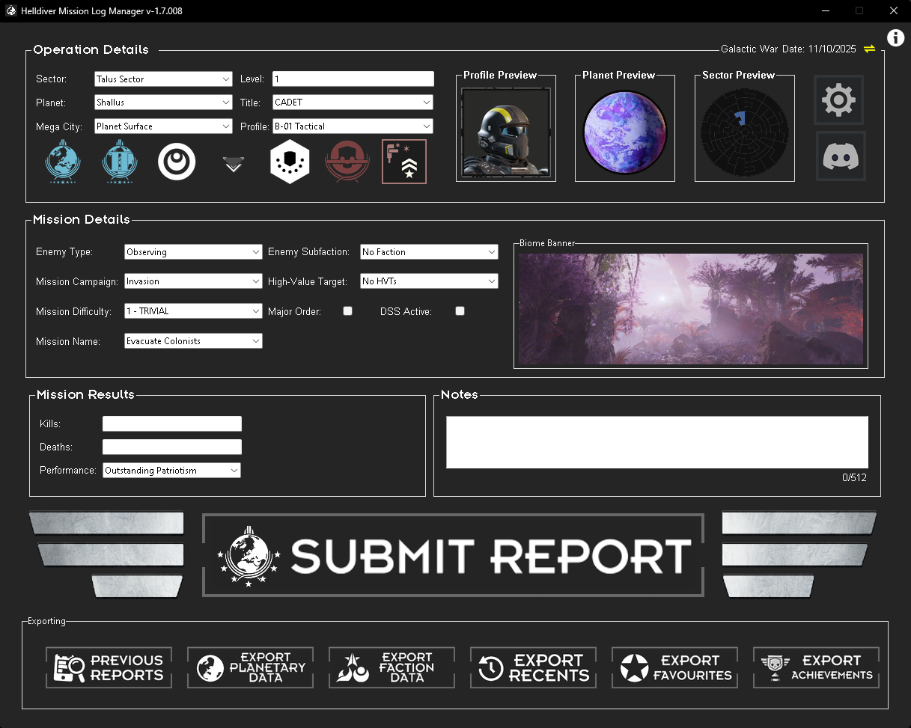
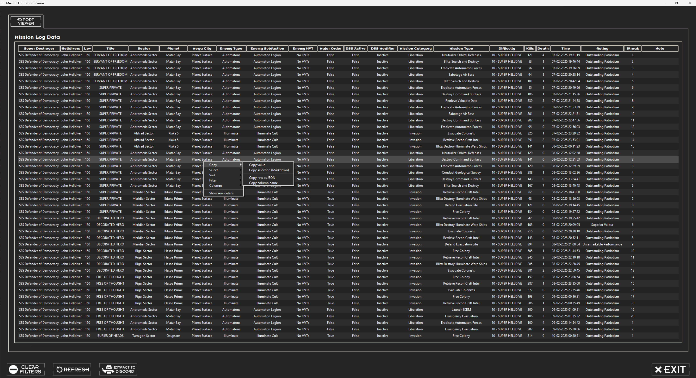
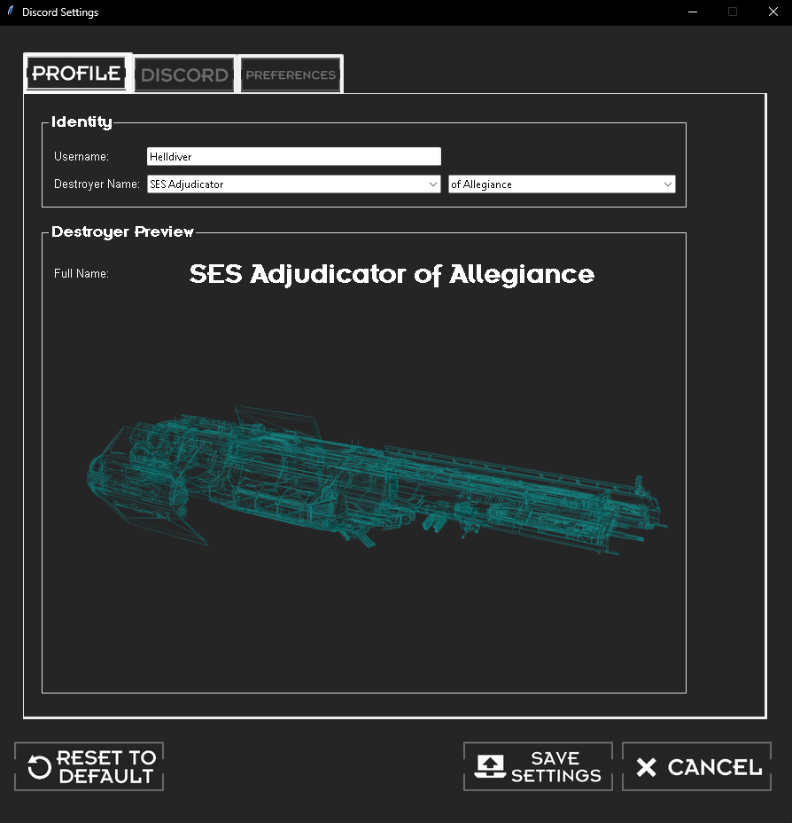
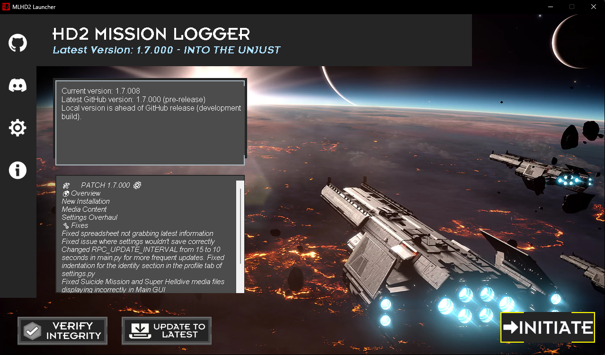
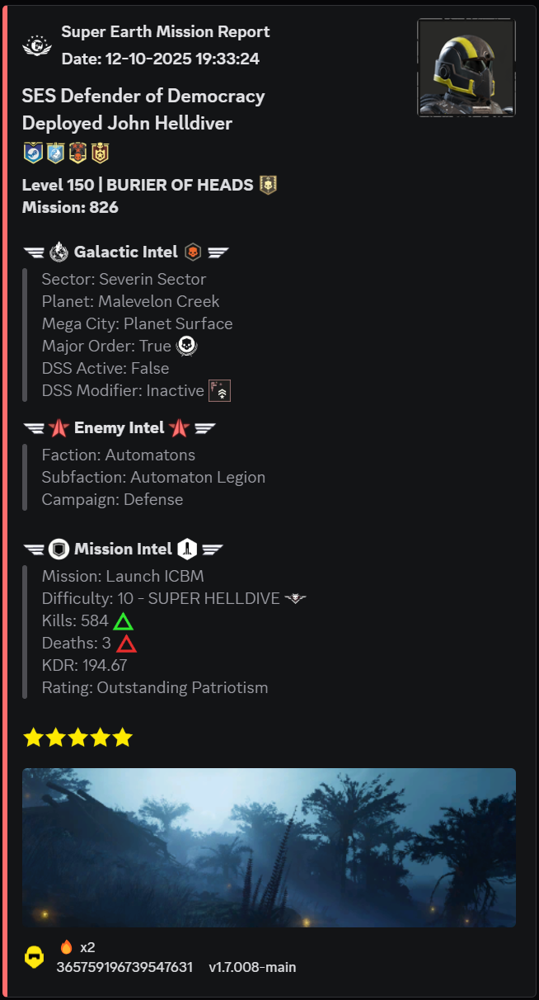

Features
Everything you need to log, summarize, and share Helldivers 2 missions.

Stats and insights
Capture a mission in one place: pick sector and planet, set enemy and campaign, toggle DSS/Major Order, then record kills, deaths, and performance. Live previews and quick export actions keep entry fast and accurate.
Exports when you need them
Review a sortable, filterable grid of missions with columns for time, kills, deaths, rating, streak, and notes. Export results or extract a selection to Discord in a single click.


Privacy-first
Identity and formatting stay local. Configure display and destroyer names with live preview, customize Discord webhooks and platform badges, and generate a shareable player card.
Lightweight
Small launcher with version info, patch notes, and one‑click actions: Verify Integrity, Update to Latest, and Initiate. No game file edits—just launch and log.


Shareable embeds
Create clean Discord‑ready cards with icons and structured sections for intel, mission details, and results. Includes stars, banner art, and commendations for posts that look great at a glance.